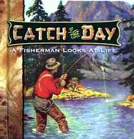

本棚から
ニュ―ジ―ランドで読んだ釣り関連の洋書 CATCH of the DAY
Written and Compiled by John Paul Brownlow
The Brownlow Corporation 刊 ISBN 1-57051-2701
オ―クランドの静かな住宅地レミュエラのギフトショップで、洒落た小さな本、CATCH of the DAY を見つけました。

釣り人が人生に見るもの というサブタイトルが付いていまして、釣りばかりでなく、人生についてのいろいろな名言・格言が集められています。中でも、特に感動したことわざを引用しますと、
Pray not for lighter burdens
but for stronger backs.軽い荷物を求めて祈るのでなく、
強い背中を求めて祈れ。Theodore RooseveltWhen the troubles are few,
dreams are few.苦難の少ないとき、
夢もまた、少ない。古 諺You must lose a fly to catch a trout.
鱒を釣り上げるためには、フライを失わなければならない。
George Herbert
などがあります。この本を読んだからといって、すぐにどうこうなるものではありませんが（笑）、徒然に手にとって開いてみる価値は、あります。
2001/04/15
本棚から 目次へ
サイトマップ
ホームへ
お問い合わせ